Waterjet Software Manual
A publication by Donatoni Macchine S.r.l.
Software Version: 2026.1.0.0
Manual Version: 1.0
Date:
General information
The information contained in this document applies only to the software versions indicated on the title page.
Not all the functions provided by the product may be described in this documentation; in such cases, Donatoni Macchine S.r.l. is under no obligation to guarantee these functions or retain them in future versions.
Purpose of the manual
This manual provides the operating instructions required to understand the Waterjet software and the Parametrix interface, as well as useful information for troubleshooting.
Correct machine operation, service life and operating efficiency depend on compliance with the instructions provided in this manual.
The machine operating and maintenance manual and this software manual must always be available at the system installation site, in a safe and easily accessible place. If either manual is lost, contact the Prevention and Protection Service Manager.
Failure to comply with the instructions provided in this manual, negligence or improper and inappropriate use of the machine may cause the Manufacturer to void the machine warranty and may prevent the machine from providing the benefits for which it was designed.
DONATONI MACCHINE SRL is always available to provide prompt and accurate technical support and any assistance that may help ensure optimal machine operation and maximum productivity.
The Manufacturer reserves the right to modify this publication and the information contained herein at its discretion whenever deemed necessary for the technical or commercial improvement of the product.
Storing the manual
This Software Manual must be kept throughout the machine's entire service life, including if the machine is transferred to a third party.
To store the Software Manual correctly, observe the following recommendations:
Use the Manual in a manner that prevents damage to all or part of its contents; in particular, do not leave the Manual unattended during use and return it to its designated location immediately after consultation;
Do not remove, tear out or rewrite any part of the Manual for any reason;
Store the Manual in an area protected from moisture, heat and other environmental factors that could impair its integrity or service life;
If all or part of this Manual is lost or damaged, request a copy of the documentation from the Manufacturer.
Users
This document contains information intended for:
Machine operator
Authorised service technician
Using the document
The document is divided into chapters describing:
The software structure and Parametrix interface
Machine functions in Manual and Run modes
Image acquisition functions
Configuration and use of the Hydrofinish function
Description of the main software sections
Reporting problems
If any problems arise while studying this document, contact the Donatoni Macchine S.r.l. Service Department.
When opened, the D-WATERJET application displays the following interface:

Top bar
This bar is located at the top of every page in the application.
Maintenance | |
 | Settings |
Support | |
 | Minimise |
 | Shut Down / Restart |
Maintenance
This page provides a list of maintenance operations.
Each row fills progressively to indicate the time remaining until the next maintenance operation.

 | Filter by name |
 | Execution |
Performing a maintenance operation
This window contains useful information and links for the selected maintenance operation:
Maintenance name
Maintenance description
Maintenance operation information
Links to DSC (Donatoni Share Content)
The DSC page opens directly on the right-hand side of the window.
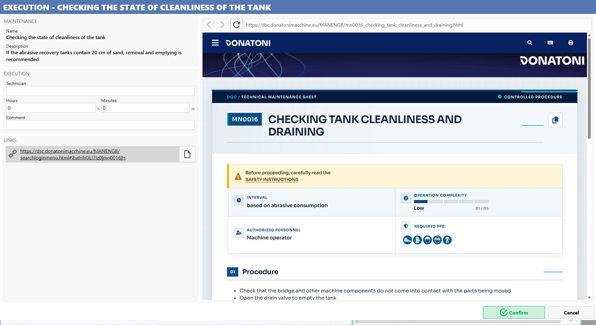
Settings
The settings page appears as follows:

Information
The upper-left section of the panel displays general information about the installed application and its current version.

Remote assistance
This box, located in the upper-central section of the panel, allows the operator to contact the Service Department and provides the following actions:

Settings top bar
This bar is located in the upper-right section of the panel.

Selected language | |
Interface management | |
Touchscreen keyboards | |
Application theme |
Search
This bar is located immediately below the top bar, on the right-hand side of the panel.
The bar appears as follows:
When completed, this text field limits the results shown in the parametersbox to those containing the entered text, as shown in the following example image:

Categories
This box, located on the left-hand side of the interface, allows the operator to select a main settings category and access the advanced categories.
The advanced categories can be accessed only after an authorised Donatoni technician enters a password.

Parameters
This section, which occupies the central area of the parameters panel, allows the operator to modify the parameters in the currently selected category.

Application category
Theme | Sets the application theme. |
Automatic start-up | Enables automatic start-up when the PC starts. |
On-screen keyboard | Enables the on-screen keyboard. |
Keyboard when clicking ISO code | Enables the keyboard to open when the ISO code is clicked while ‘touch’ mode is active. |
Language | Application language. |
Smart remote assistance | Enables smart remote assistance. |
Settings bottom bar
This bar is located in the lower-right section of the page.

 | Confirm |
Cancel | Closes the settings panel and discards any changes made by the operator. |
Support
Pressing the support button opens a remote assistance panel similar to the one shown in the following image:

To receive remote assistance directly on the machine, the operator must provide the Service Department with the following information displayed in the panel:
ID | In the example image, this is the number immediately below: Your ID. |
Password | In the example image, this is the set of letters and numbers immediately below: Password. |
Shut Down / Restart
The following operations can be performed from this panel:
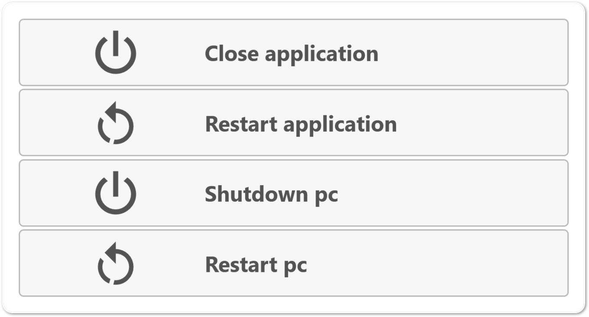
 | Close application |
 | Restart application |
| Shut down system |
| Restart PC |
Sidebar
This sidebar is located on the right-hand side of every page in the application.
Sidebar visibility | |
 | Home |
Statistics | |
 | Services |
| CadCam |
The Home interface appears as follows:

Commands
This box is located in the upper-central section of the interface.
It allows the operator to perform the following actions:
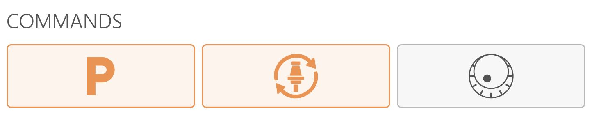
 | Automatic parking |
 | Manual Tool Change |
 | Handwheel |
Operating mode
The following box is located in the upper-right section of the interface and allows the operator to choose between:

 | Manual |
Run |
Axes
This box is located in the upper-left section of the interface.
Its shape and content layout vary according to the selected operating mode:
Manual
In Manual operating mode, the box appears as shown in the following example image:

Axis buttons
The following buttons are available only in this operating mode:
 | Reset Axis |
 | Reset X and Y origins |
 | Reset Z origin |
 | Decrease axis coordinate |
Increase axis coordinate |
Run
In Run operating mode, the axes box is resized.
Each axis displays its current position, and the box appears as shown in the following example image:
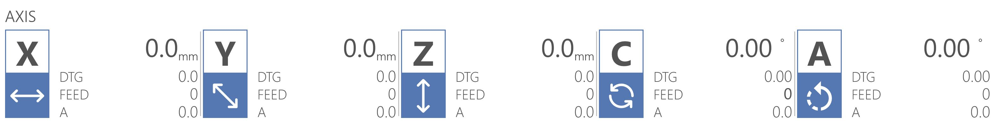
DTG | Distance To Go, the distance to the target. |
FEED | Movement speed expressed in mm/minute. |
A | Amperes. |
Axis commands
This box is located immediately to the right of the Axesbox and allows the following operations:

 | RTCP coordinates Operating procedure:
Movement using the RTCP command is permitted only when the coded key is inserted in the appropriate location on the operator console.
|
MDI / MDI RTCP |
Origin
This box is located in the upper-right section of the interface, immediately below the Operating Mode.
It allows the operator to view the axis origins and RTXP origins and to view and modify the active origin.

ISO
This box extends across the lower-left section of the interface and allows the operator to manage ISO files.
When an ISO file is loaded, the interface appears as follows:

Top bar
The execution progress bar is displayed in the top bar of the box.
The following information is also provided:
 | Progress |
 | Estimated time |
 | Thickness |
Bottom bar
This bar, located at the bottom of the box, provides the operator with the following buttons:
Preview | |
 | Operations |
 | DRY RUN |
Test ISO | |
 | Select file |
Edit | |
 | Automatic execution |
Block search |
Select file
When the Select filepanel is opened, a window similar to the following appears:
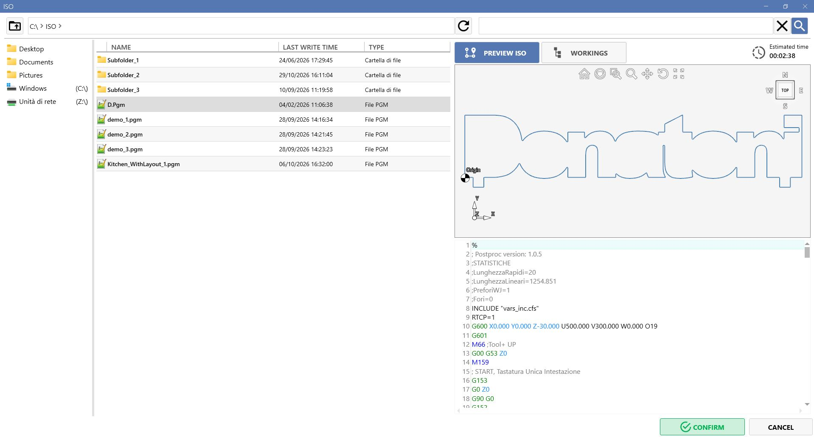
 | Parent folder |
 | Reload |
 | Clear text filter |
 | Apply filter |
 | Paths |
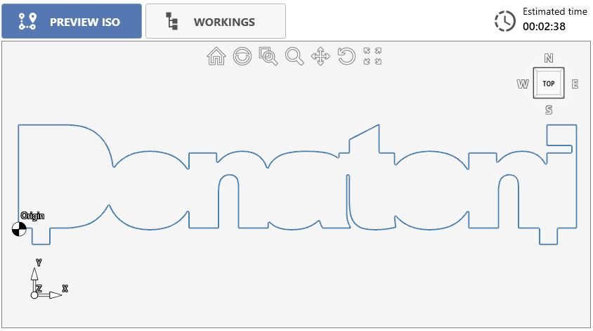 | ISO preview |
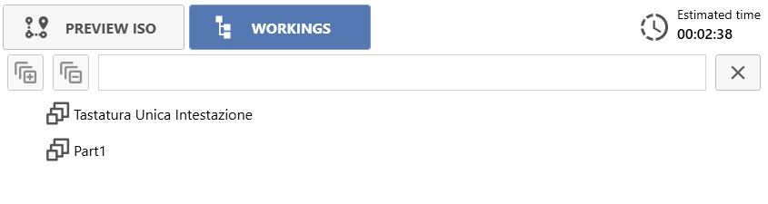 | Operations |
 | Estimated time |
 | ISO code preview |
ISO preview
The ISO preview displays the selected file and allows the operator to select a cut from the box on the right and view the corresponding code section.

ISO preview elements
The preview contains the following buttons and graphical elements:
Home | |
 | Magnifying glass |
 | Zoom Window |
 | Zoom |
 | Pan |
 | Rotate |
 | Zoom to fit |
Orientation cube | |
 | XYZ axis indicator |
Operations
The operations included in the selected ISO file are displayed.

Editing operations
Selecting the Edit button at the bottom of the box allows individual operations in the selected file to be enabled or disabled.
Selecting an operation comments out the corresponding section of code in the file, as shown on the left-hand side of the following example image:
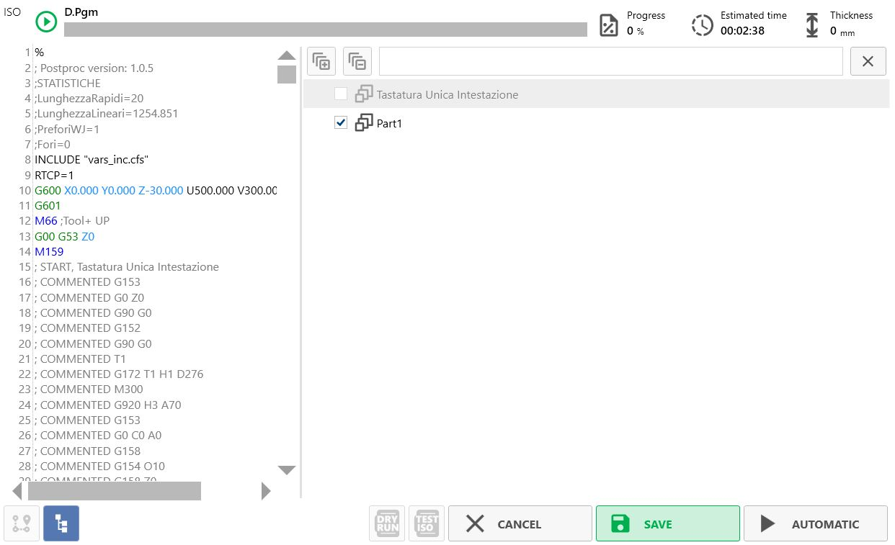
Waterjet
This box is located in the central-right section of the application and provides the operator with the following options:

Waterjet buttons
 | Measure tool |
 | Jet active |
| Pump active |
 | High pressure |
 | Abrasive active |
Waterjet parameters
 | Low pressure |
 | High pressure |
 | Abrasive flow |
| Abrasive in LP |
 | Inclined-cut correction |
Take photo
This box is located in the lower section of the interface.
This function is generally used to take a photograph of the machine worktable using the built-in camera.

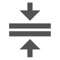 | Thickness |
Take photo |
Take photo panel
Pressing this icon takes a photograph and opens the acquired image page.
From this page, the photograph can be discarded or saved by specifying the save path and desired thickness.

Save parameters
 | Photo name |
 | Photo save path |
 | Select photo path |
Take photo
Thickness | |
Take photo |
Feed
This box is located in the lower-right section of the interface and displays the Feedvalue, which represents the machine's interpolated movement.

When Tool Plus is enabled, the Home page interface changes as follows:
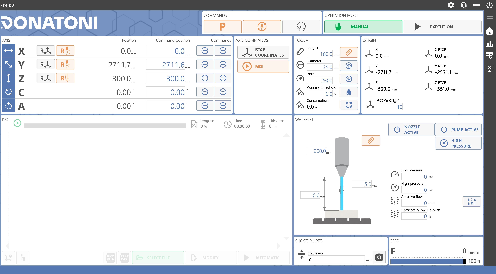
Tool Plus
This box is located in the upper-right section of the interface and allows the Tool Plus to be managed:
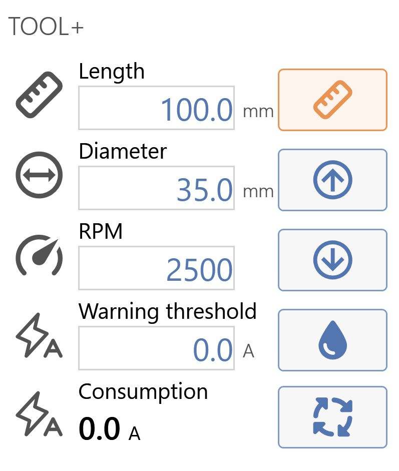
Tool Plus parameters
/3.3_b-20261023-053843.png) | Length |
Diameter | |
/3.5_b-20261023-053926.png) | RPM |
/3.6_b-20261023-054008.png) | Alarm threshold |
| Consumption |
Tool Plus buttons
/7.3_b.png) | Probe tool |
/3.9.png) | Raise |
/3.10.png) | Lower |
/3.11.png) | Water On/Off |
Enable/Disable rotation |
When Tool Plus and Hydrofinish are enabled, the Home page interface appears as follows:
/0_b-20261104-073700.png)
Tool Plus
The Tool Plus box is now wider and includes an illustration of the Tool Plus tool:
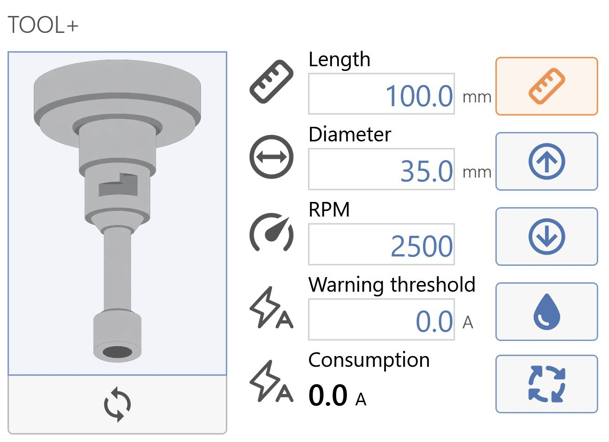
Tool Plus buttons
New elements appear on the left-hand side of this box:
/PART_InnerGrid_System.Windows.Controls.Grid_28831760-20261023-140317.png) | Change mode |
Tool Plus mode
The following modes are available:
/4.1_b-20261104-083138.png) | Milling cutter |
/4.2_b-20261104-083207.png) | Hydrofinish |
This window displays statistics for the operations performed by the machine.

Top bar
 | Refresh statistics |
 | Date filter |
 | List |
 | Chart |
Date filter
This filter limits the period over which statistics are collected.
After the date-filter button is clicked, the following panel opens. It allows the start date or end date to be changed or one of the time filters on the left-hand side of the panel to be selected:

List Statistics
The list view allows the operator to sort and filter the statistics using the available fields shown in the following example image:
List statistics bottom bar
Page selector
| |
 | Displayed results |
Chart Statistics
The chart view allows the operator to view the statistics arranged chronologically and limited to the currently selected category.
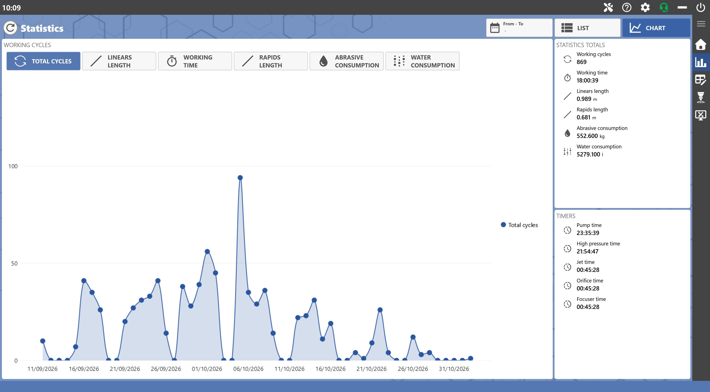
Categories
The standard categories available in the chart statistics are listed below:
Total cycles | |
 | Linear lengths |
Working time | |
| Rapid-movement lengths |
 | Abrasive consumed |
Water consumed |
Statistics totals
This box is located in the upper-right section of the interface and provides the operator with total statistics values by category.

Timers
This box is located in the lower-right section of the interface and provides the operator with a summary of certain times:

This page provides access to alarms and maintenance:
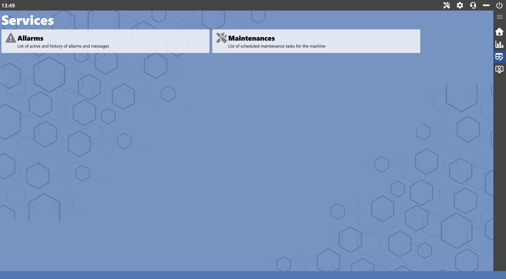
Services
 | Alarms |
Maintenance |
Alarms page

Top bar
Back | |
 | Refresh |
 | Active |
 | History |
Active alarm example
The following image shows an example of an active alarm, with the application background turning red:
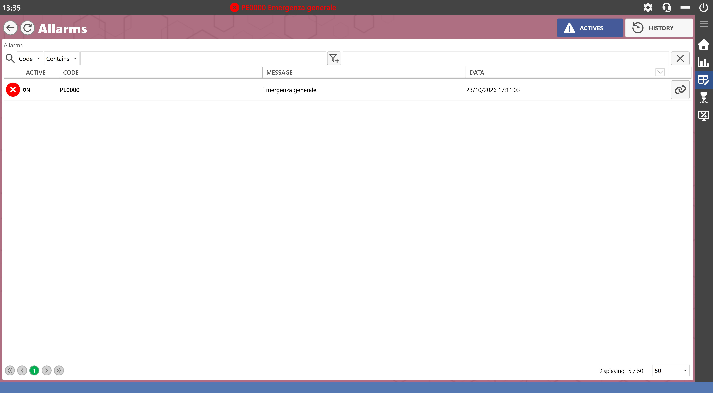
History example
The following image shows an example of the history:
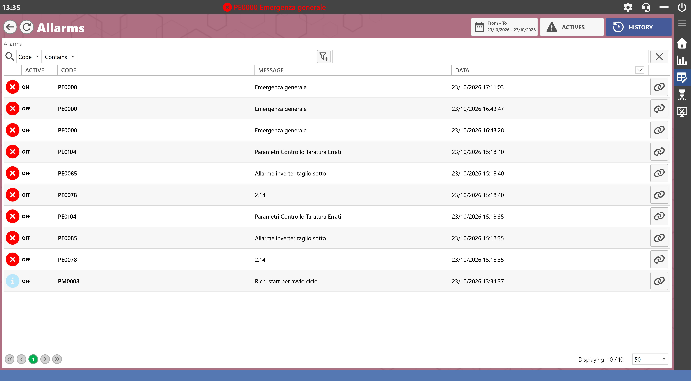
Buttons
History date filter
 | Date filter |
The operator can choose to display messages from the current day, week, month or year, or set a custom interval.
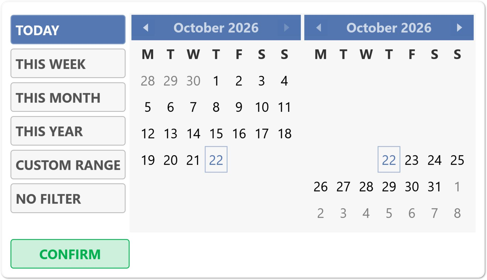
DSC (Donatoni Share Content)
 | Alarm DSC |
Maintenance page
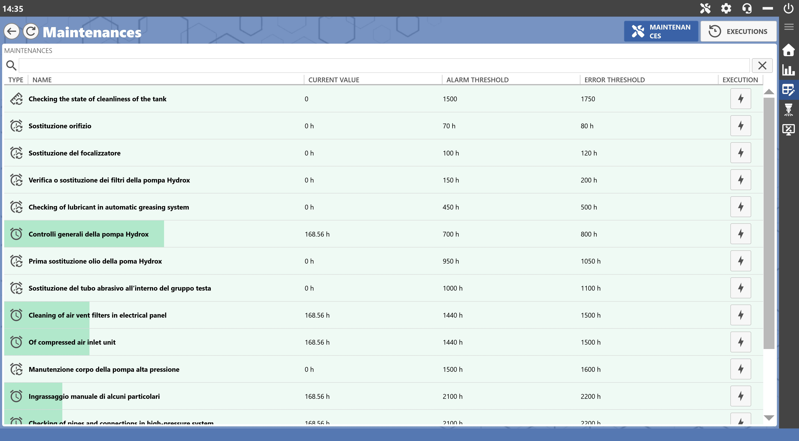
Top bar

 | Back |
Refresh | |
Maintenance | |
 | Executions |
Maintenance
 | Open DSC |
Executions
 | Date filter |
The operator can choose to display maintenance operations from the current day, week, month or year, or set a custom interval.

This interface can be accessed by pressing the following button in the right-hand side menu:
/3.4-20261023-073231.png) | Hydrofinish |
The following image shows an example of the Hydrofinish interface:
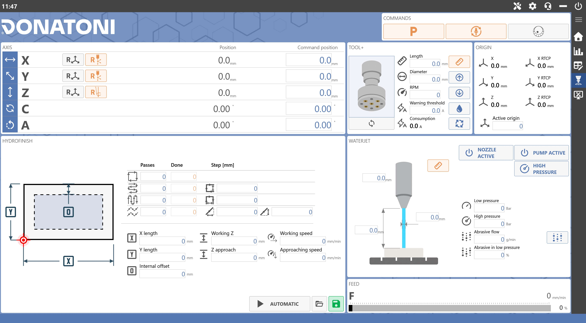
Commands
This box is located in the upper-central section of the interface.
It allows the operator to perform the following actions:
/1.0.png)
/1.1.png) | Automatic parking |
Manual Tool Change | |
Handwheel |
Axes
This box is located in the upper-left section of the interface.
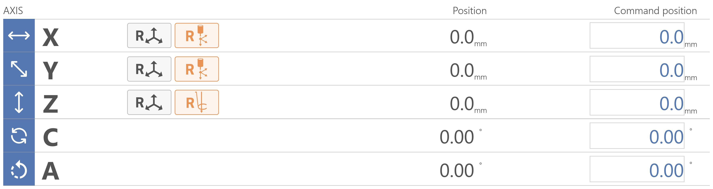
Axis buttons
The following buttons are available only in this operating mode:
/3.6.png) | Reset Axis |
/3.7.png) | Reset X and Y origins |
/3.8.png) | Reset Z origin |
Tool Plus
This box is located in the upper-right section of the interface and allows the Tool Plus to be managed:
/3.0.png)
Tool Plus parameters
/3.3_b-20261023-053843.png) | Length |
/3.4_b-20261023-053756.png) | Diameter |
RPM | |
/3.6_b-20261023-054008.png) | Alarm threshold |
| Consumption |
Tool Plus buttons
/PART_InnerGrid_System.Windows.Controls.Grid_28831760-20261023-140317.png) | Change mode |
Probe tool | |
/3.9.png) | Raise |
/3.10.png) | Lower |
/3.11.png) | Water On/Off |
/3.12.png) | Enable/Disable rotation |
Origin
This box is located in the upper-right section of the interface, below the top bar:
/4.0.png)
Hydrofinish
This section is located in the lower-left section of the interface and allows the Hydrofinish machining parameters to be managed:
/5.0.png)
Hydrofinish pass types
The upper half of this box includes the following pass parameters:
/5.2.0.png)
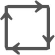 | Perimeter |
Horizontal passes | |
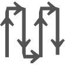 | Vertical passes |
/5.2.4.png) | Zigzag passes |
/5.2.5.png) | Left-to-right pitch |
Top-to-bottom pitch | |
/5.2.7.png) | Zigzag X pitch |
/5.2.8.png) | Zigzag Y pitch |
Hydrofinish parameters
The lower half of this box includes the following pass parameters:
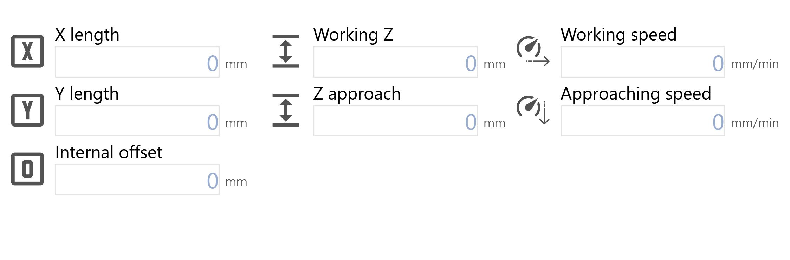
/5.3.1.1_b-20261023-055450.png) | Horizontal dimension |
/5.3.1.2_b-20261023-055538.png) | Vertical dimension |
/5.3.1.3_b-20261023-055620.png) | Internal offset |
/5.3.2.1_b-20261023-055706.png) | Machining Z |
| Approach Z |
Working speed | |
/5.3.2.4_b.png) | Approach speed |
Hydrofinish bottom bar
/6.11-20261102-134714.png) | Automatic |
/5.4.2.png) | Load recipe |
/5.4.3.png) | Save recipe |
Load recipe
The panel for loading a recipe initially appears as follows:
/5.5.1.png)
After a recipe is selected, a preview of its values is displayed:
/5.5.2-20261023-134836.png)
Cancel | |
Confirm |
Waterjet
This box is located in the central-right section of the application and provides the operator with the following options:
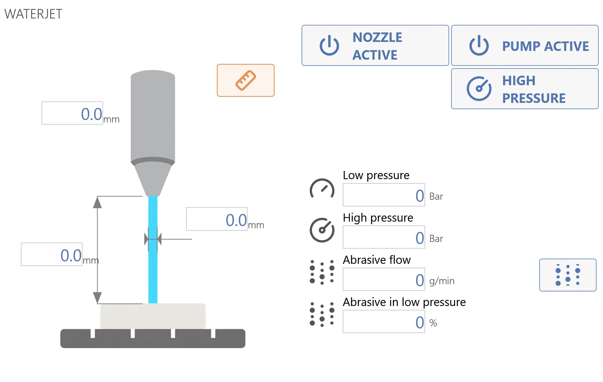
Tool Plus buttons
/7.3_b-20261102-141203.png) | Measure tool |
/7.1-20261026-101827.png) | Jet active |
| Pump active |
/7.2-20261102-140634.png) | High pressure |
/7.8-20261102-140952.png) | Abrasive active |
Tool Plus parameters
Low pressure | |
/7.5_b-20261030-143036.png) | High pressure |
/7.6_b-20261030-143108.png) | Abrasive flow |
| Abrasive in LP |
Feed
This box is located in the lower-right section of the interface and displays the Feedvalue, which represents the machine's interpolated movement.
/7.0.png)
When the application is opened, the EasyStone programming application starts.
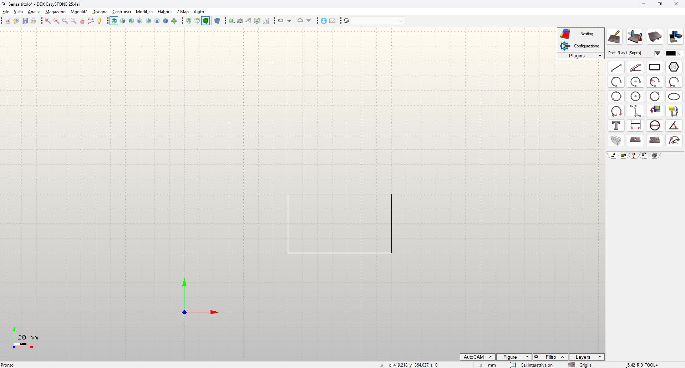
Creating paths and nesting
The software allows paths and nesting layouts to be created manually for subsequent use when applying operations. Paths can also be imported directly from drawing files.
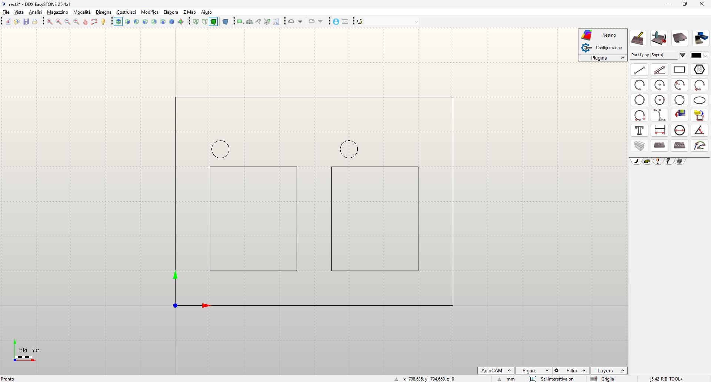
Applying machining kits
The working material and thickness can be defined for the drawn paths, and machining kits can then be applied.
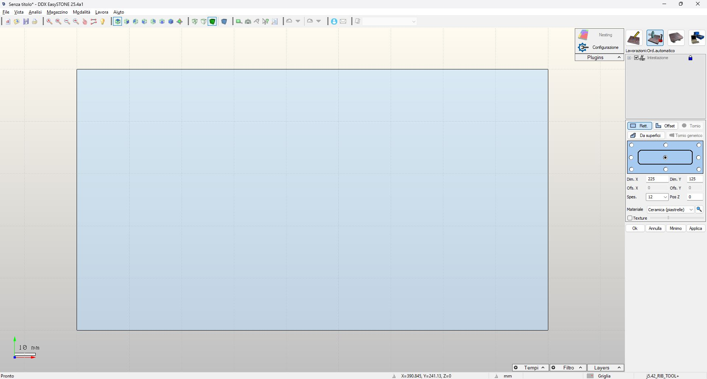